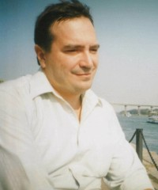

Сергей Халаимов, композитор
Сергей Анатольевич Халаимов - композитор города Ростова-на-Дону. Автор более 1000 песен и пьес для детей, Сергей Халаимов.Персональный сайт
Родился 8 февраля 1965 года в городе Ростове-на-Дону, в семье служащих.
Музыку сочиняет с детства. Первое музыкальное произведение сочинил в 8-милетнем возрасте. В 1979 году окончил Детскую музыкальную школу им. Римского-Корсакова (г.Ростов-на-Дону) по классу скрипки. В 1980 году, по окончании 8 классов ростовской средней школы №91, поступил на теоретическое отделение Ростовского училища искусств, которое окончил с отличием в 1984 г. Педагогами по композиции были Анатолий Иванович Кусяков и Алексей Павлович Артамонов - старейший донской композитор.
В 1984 г. поступил на теоретико-композиторский факультет Ростовского государственного музыкально-педагогического института (сейчас Ростовская государственная консерватория им. С.В.Рахманинова) в класс композиции профессора А.И. Кусякова. Участвовал в концертах молодых композиторов, посещал Молодежную секцию Ростовской организации Союза композиторов. Во время обучения в вузе появились его первые произведения для детей – в дальнейшем эта область творчества станет для него доминирующей.
В 1990 г. окончил Ростовский музыкально-педагогический институт с отличием по классу композиции проф. А.И. Кусякова (1945–2007)
В этом же 1990 году начал работать в ростовской средней школе №104 руководителем кружка "Юный композитор". Кроме того, в этой школе и в ее филиале осуществлял музыкальное оформление школьных концертов, праздничных мероприятий и театральных спектаклей.
В 1993 – 1994 годах работал преподавателем композиции в Школе одаренных детей при Ростовском училище искусств.
Несколько лет пел в дополнительном составе факультетского хора РГМПИ и в церковных хорах. С 2000 г. по настоящее время работает концертмейстером детского хора "Радость" при Центре детского творчества Ворошиловского района г.Ростова-на-Дону. Его детские песни составляют важную часть репертуара этого ансамбля.
Из других детских и народно-самодеятельных коллективов Дона, часто и охотно разучивающих его произведения, следует упомянуть ансамбль "Солнечный город" при том же ЦДТ, ансамбль "Конфетти" и народную вокальную студию "Кантилена" при ДК "Ростов-Досуг", хоры ДМШ и ДШИ Ростова, Зернограда, с. Самарское.
В Ростовской областной филармонии за последние 10 лет состоялось более 10 авторских концертов композитора.
Много авторских встреч провел в библиотеках, детских садах, школах, Центрах дневного пребывания пенсионеров и инвалидов Ростова и области.
Его песни неоднократно звучали на фестивалях "Ростовские композиторы – детям", в передачах радио "Дон-ТР", публиковались в нескольких коллективных и 11 авторских сборниках ("Ростовский вальс", 1997; "Уходит осень", 2000; "Веселый щенок", 2001; "Где прячется зайчик", 2001; "Осенние письма", 2003; "Картинки лета", 2003; "Вы меня не узнали", 2005; "Как много лет я ждал...", 2005; "Последняя осень 20-го века", 2005; "Встреча", 2006; "Песенные кружева," 2007) и в газетах Ростова и области. Кроме того, в ростовском издательстве "Феникс" вышло несколько хрестоматий фортепианного педагогического репертуара, где есть и его пьесы, вариации и сонатины, в том числе специально сочиненные для этих изданий.
Среди сочинений: симфоническая поэма-сказка; детские сонатины, вариации и пьесы для фортепиано (некоторые из них опубликованы в хрестоматиях для детских музыкальных школ); сотни романсов и песен (в т.ч.детских).
Значительной вехой творческой биографии композитора является активное участие в работе ростовских литературно-музыкальных общественных объединений "Созвучие" и "Окраина".
В год 300-летия Таганрога (1998) стал лауреатом литературно-музыкального конкурса "Город у моря".Общение и дружба с ростовскими литераторами повлияли на возобновление забытого детского увлечения стихотворчеством. Его стихотворения были опубликованы в нескольких выпусках альманаха литобъединения "Окраина".
С 1991 года сотрудничает с ростовским камерным ансамблем "Каприччио" как аранжировщик.
Последние на сегодняшний день сочинения – детские мюзиклы на либретто Н.М.Рябухиной ("Гадкий утенок" и тетралогия "Времена года"), ею же поставленные на Камерной сцене Ростовского музыкального театра (объединенными силами артистов театра и детских коллективов Ростова-на-Дону) в 2008 - 2013 гг.
|